Anno 1915
Raccolta di cartoline inviate da Giovanni Martinelli alla futura moglie Lina Masoni.
Un corteggiamento attraverso le parole scritte all'amata lontana.
Un corteggiamento attraverso le parole scritte all'amata lontana.
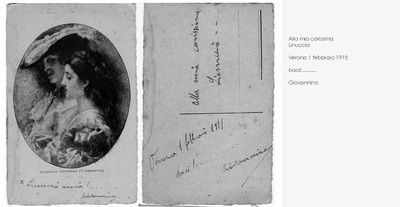
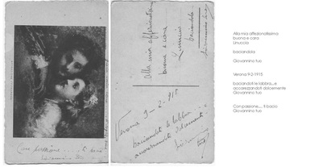
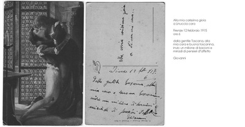
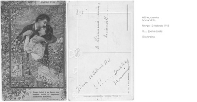
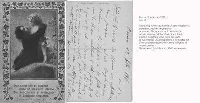
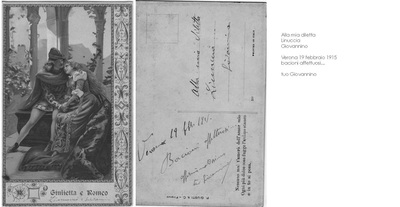
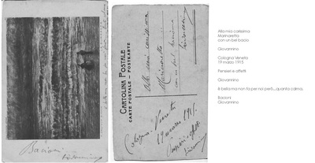
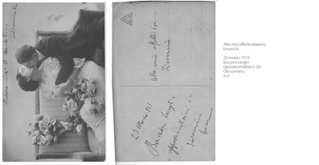
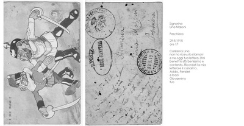
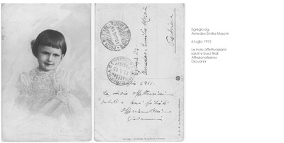
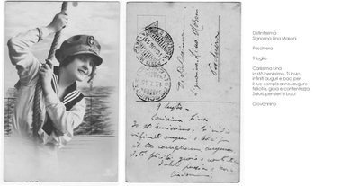
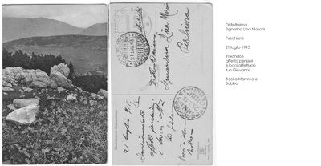
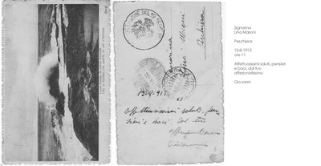
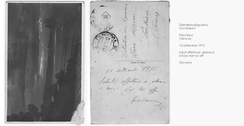
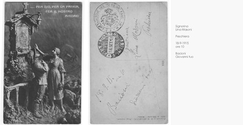
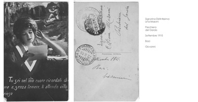
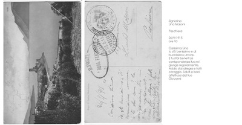
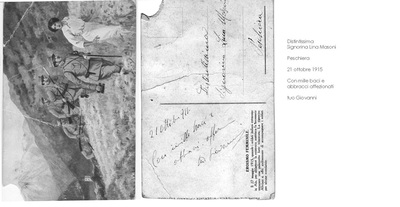